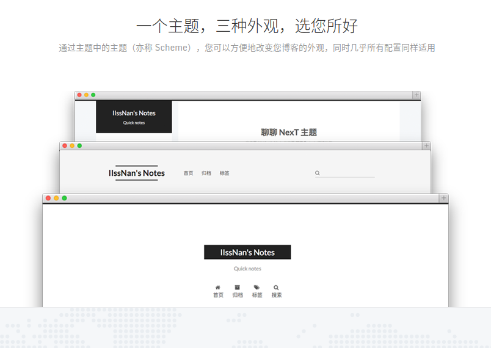
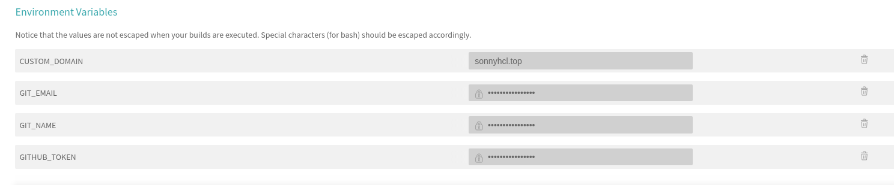

Hexo+GitHub搭建个人博客
本着随便写点什么的想法，我开始搭建了这个博客站点。想着是越简单越好，越朴素越好，现成的GitHub Pages不用白不用，最好是能直接基于markdown就能生成页面，最终选择了GitHub Pages+Hexo+Next Mist+Travis CI的方案。
技术方案
GitHub Pages
GitHub提供了一个Pages的服务，给广大薅羊毛用户:)创造了一个免费搭建静态网页博客的机会。只要你有github账号，就可以有一个对应的<username>.github.io专属域名，。默认情况下我们需要创建一个<username>.github.io的github项目，这个项目中的网页内容将会被自动呈现在https://<username>.github.io下。假设该项目中有一个index.html文件，内容是Hello World，打开对应的网址就会看到大大的Hello World字样。
Hexo
虽然GitHub提供了一个非常完美的静态文件托管服务，但是我们不能每次手写一通复杂的html，写点东西的小激情会很容易被耗损。也不能就是一个纯文本页面，那也太朴素了一点。这时候就需要类似Hexo这样的快速、简洁且高效的博客框架，可以很方便地将markdown渲染为一定样式的页面。
选中Hexo的主要原因是因为它有一套完整的markdown支持体系，除了一开始的配置之外，以后每次写文章只需要新建一个md文件就可以开写了，在书写过程中不需要再额外考虑样式等问题。
一个完整的Hexo项目都会包括以下几个部分，根目录下的_config.yml被称作为站点配置文件，scaffolds内存储的是页面的markdown模板，themes下存放主题插件（下一节里介绍），里面也会包含一个_config.yml被称之为主题配置文件，至于source里放的就是你写的markdown博文啦。
1 | # Hexo Configuration |
Next Mist
Hexo负责的是文件转换，而静态网页的样式在主题插件中定义。Next就是这样一个主题插件，目前NexT支持如下三种Scheme，本着简洁、朴素的原则，我最后挑选了Next Mist作为博客的主题。
- Muse - 默认 Scheme，这是NexT最初的版本，黑白主调，大量留白
- Mist - Muse的紧凑版本，整洁有序的单栏外观
- Pisces - 双栏Scheme，小家碧玉似的清新

1 | 这个配置文件实在是太长了，我就不复制过来污染眼睛了 |
Travis CI
由Markdown文件自动生成静态文件并部署到GitHub Pages这个流程可以说是非常机械和重复的。虽然hexo也有一个deploy的功能，但是总归还是要手工操作一波。源文件放在source分支，生成的静态文件部署在master分支上，本着能自动绝不手动的原则，这里我们利用Travis CI来自动完成部署的步骤。
我们需要在travis上设置在配置文件中用到的四个环境变量，其中$GITHUB_TOKEN需要在GitHub申请一个Personal Token，$CUSTOM_DOMAIN是博客所在的域名（即<username>.github.io)，$GIT_NAME和$GIT_EMAIL则是你的github账户。当我们创建或者修改了博文并推送到source分支之后，travis会自动拉取并生成最新的静态内容并推送到master分支。

1 | language: node_js |
常规操作
开发环境部署
如果要在一台新电脑上写博文，那么要先配置一下开发环境，其实这一步完全可以参考前面的.travis.yml中的步骤来，本质上是相同的。
1 | yarn add hexo-cli |
- 安装package.json中依赖
1 | yarn install |
- 到这里就部署好你的本地开发环境了
一篇博文的诞生
- 首先需要想好要写什么，想一个简短的题目
1 | hexo new create-a-new-post |
- 然后就会在source/_posts文件夹下生成一个
日期+标题的文件夹和markdown文件，可以直接在markdown中引用同名文件夹下的图片素材，如下所示。
1 |  |
参考链接
样式一次搞定不存在的，每次看到别人博客里好玩的都会研究下怎么neng过来lol
求助！！要怎么样才能实现下面这样的效果呢？spoiler+codeblock+include三级嵌套！！
1 | {% spoiler "站点配置文件 _config.yml" %} |